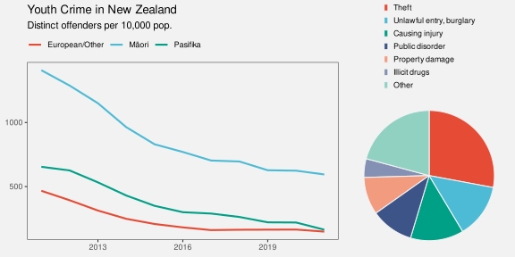
14 Encoding Structure
Figure 14.1 shows a line plot of the rate of youth crime in New Zealand for different ethnic groups and a pie chart showing the proportions of different types of crime.1 There is a problem with this figure because the line plot and the pie chart share the same colour palette even though they are visualising different variables (ethnicity and crime type). For example, the ethnic group European/Other is encoded as the orange colour of a line and the crime type Theft is also encoded as an orange colour, in this case the colour of a wedge.
The conflicting encodings in Figure 14.1 create a confusing data visualisation because the same visual feature decodes to multiple data values (Figure 14.2). There is nothing wrong with the encodings in the line plot by itself or with the encodings in the pie chart by itself, but the overall combination of elements within Figure 14.1 is ineffective.
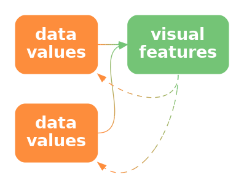
The problem in Figure 14.1 involves the coordination, or lack thereof, between multiple elements of a data visualisation. In this chapter we look at the arrangement and coordination of the elements of a data visualisation.2
14.1 Encoding organisation
Figure 14.3 shows a scatter plot of the number of clean breaks and the number of tries for countries at the 2023 Rugby World Cup (Table 9.1). This data visualisation is similar to Figure 9.4, but with an additional encoding of the hemisphere for each country as the colour of the data points.
The legend in Figure 14.3 encodes the colour encoding: which colour is used to encode each hemisphere. In Section 13.7, we described how the proximity of the labels “South” and “North” to the coloured points in the legend allow us to associate the colours with the different hemispheres. The different values of hemisphere are encoded as the vertical positions of the points and the text labels; both the orange point and the label “South” have the same vertical position.
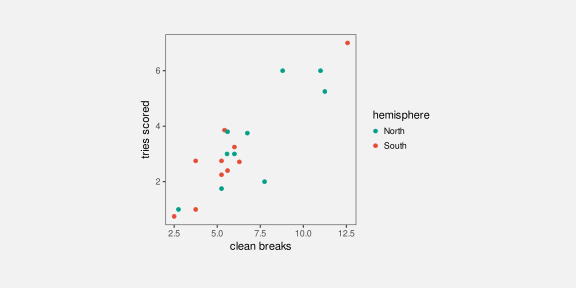
What about the horizontal position of the points and the text in the legend? These do not encode hemisphere values because they are the same for both North and South. What about the position of the legend title, “hemisphere”?
All of the elements of the legend are positioned together and to the right of the main plot. Their proximity to each other (and separation from the main plot) mean that we see the legend as a separate group (Section 2.7). This creates a visual organisation for the plot, which helps the viewer to navigate and comprehend the different elements of the plot.3 This is analogous to reading a body of text, which is split into paragraphs and sections with headings to help the reader navigate the text.
One way to express this is that the position of the elements of the legend encode the organisation of the overall data visualisation (Figure 14.4). Our visual system decodes the legend as a separate element based on the proximity of the text and points in the legend.
One way in which a data visualisation can be effective is if it provides information about how to read the plot as well as information about the data itself.
Another way to say it is that each element of the data visualisation in Figure 14.3 belongs to one of two groups: the main plot or the legend. There is a qualitative value—plot or legend—associated with each element of the data visualisation. These qualitative values are encoded as the position of the elements within the data visualisation: the plot is on the left and the legend is on the right.
Although we are no longer talking about encoding data values as data symbols, we are still talking about encoding. We are just encoding and decoding a different sort of information—the organisation of a data visualisation.
Figure 14.5 shows a variation of Figure 14.3, with exactly the same plot elements, but in a different arrangement. There is greater separation of the legend from the main plot. The legend has also been moved so that its top is aligned with the top of the main plot. Similarly, the axis titles have been moved so that they align with the top and right sides of the plot, and the y-axis label has been rotated to horizontal. More subtly, the right edge of the y-axis label is aligned with the right edge of the y-axis tick labels and the points in the legend are aligned with the left edge of the legend title.
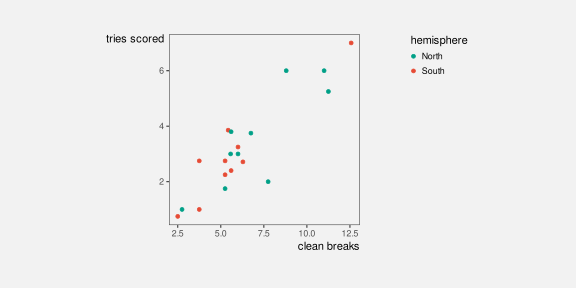
All of these changes are aimed at making the data visualisation more orderly (Section 2.8).4 The legend is more obviously a separate element from the main plot and the axis titles more obviously connect to the main plot. A more orderly arrangement of the visual elements will provide fewer distractions and lead to a more effective data visualisation because the important differences in the data will be more readily perceived (Section 2.5).
The strong alignment and regular patterns within facetted plots like Figure 11.4 are another effective example of keeping everything else the same in order to champion the changes in the data. Conversely, another weakness of placing data symbols on maps, like in Figure 12.16 (b), is that the lack of regular positioning and alignment makes it harder to attend to the important differences between data symbols.
14.2 Consistent encodings
Figure 14.6 shows a variation on Figure 14.3 with a modification to the legend. In this plot, the hemisphere of a country is encoded using orange and green within the main plot, but then hemisphere is encoded using light blue and brown in the legend. This is clearly an ineffective data visualisation. It is possible to decode that there are two groups of data symbols in the plot, but it is impossible to decode which of those two groups is North and which is South.[^inconsisten-dissonant] The point of Figure 14.6 is merely to highlight the critical importance of maintaining consistent encodings between different elements of a plot.5
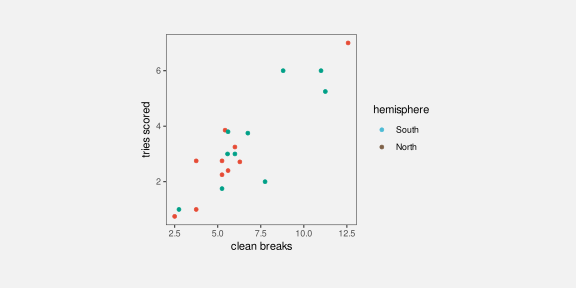
Figure 14.7 demonstrates that we can harness consistent encodings to actually improve upon the original Figure 14.3. In Figure 14.7, the encoding of hemisphere as the colour of points is not only consistent between the main plot and the legend, but it has been extended to the colour of the legend text as well. The visual grouping of elements that relate to the same hemisphere is now stronger both within the legend and across the entire data visualisation (Section 2.7).
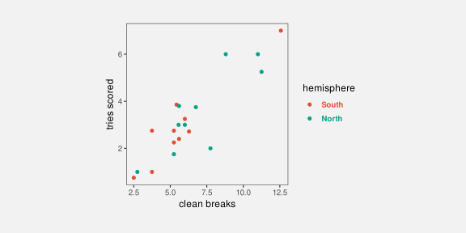
Another consistency in Figure 14.7 (and the original Figure 14.3) is the use of the same data symbol in both the main plot and the legend. Circular data symbols are used in both cases. That consistency, like the use of consistent colours, might again appear obvious, but it is not always true. For example, the data symbols in Figure 13.22 are circles, but the legend is a rectangular colour gradient.
Figure 14.8 shows a variation of Figure 13.22 with a legend that not only shares the same colour encoding, but also shares the same data symbol. It is much easier to compare the colour of one of the circular data symbols with the colours of the circles in the legend because they are all circles.
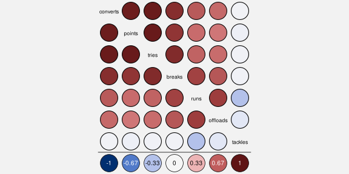
Figures Figure 6.16 and Figure 6.17 are other examples of this consistent encoding between legends and the main plot. The legends in those cases are drawn so that they mirror the positions of the bars in the main plot as well as the colours of the bars in the main plot.
14.3 Dangers of inconsistent encodings
Figure 14.9 shows a bar plot of the impact of a proposed tax bill during the second Trump administration.6 Each bar represents the predicted change in annual income for a particular income bracket. Lower incomes are to the left and higher incomes are to the right. There are labels to describe each income bracket and there are labels that describe each change in income. Where the change in income is large, the label for change in income is written within the bar (at the top of the bar), but for smaller changes in income, the bar is too small to fit the label, so the label is placed just above the bar. For the two leftmost bars, the change in income is actually negative and the change in income label is placed below the bar. The labels that describe the income brackets are mostly below the bars, but for the two leftmost bars the labels for the income brackets are placed above the bars.
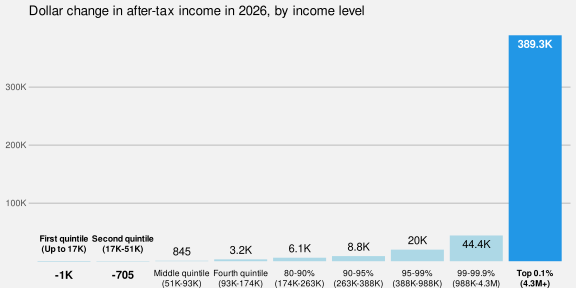
In summary, there are two labels for each bar, one below the bar and one above (or at the top of) the bar. This consistent positioning of the labels encourages the viewer to decode two groups of labels: one group above the bars and one group below the bars. However, this will mislead us into comparing, for example, “-1K” (a change in income) for the leftmost bar with “4.3M” (an income bracket) for the rightmost bar. The correct comparison is between “-1K”, which is the change in for the lowest income bracket, and “389.3K”, which is the change in income for the highest income bracket.7
Just as it makes no sense to change the encoding of data values within a data visualisation (Figure 14.6) or across multiple data visualisations within the same document (Figure 14.1), it makes no sense to change the encoding of structure within a data visualisation. In this case, all labels above the bars should belong to the same group of labels (changes in income) and all labels below the bars should belong to the same group of labels (income brackets).
14.4 Encoding importance
Figure 14.10 shows a variation on Figure 14.7 with many elements of the plot drawn in light grey. The effect of this change is to create two visual groups, one lighter and less saturated than the other. This emphasises the main data symbols in the main plot and in the legend, and de-emphasises the axes and labels. Our attention is drawn to the darker and more saturated elements first (Section 2.6), with the other elements in the background, which we can focus on if we need the additional information.8
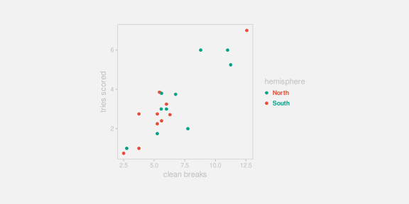
By comparison, in Figure 14.7 there is a similar visual impact from all elements of the plot, so it is less clear where to look first. All of the elements of the data visualisation compete for our attention. Figure 14.11 emphasises this point by making all axis and legend text black and adding black grid lines. The data symbols are now lost amongst the non-data elements of the plot.9
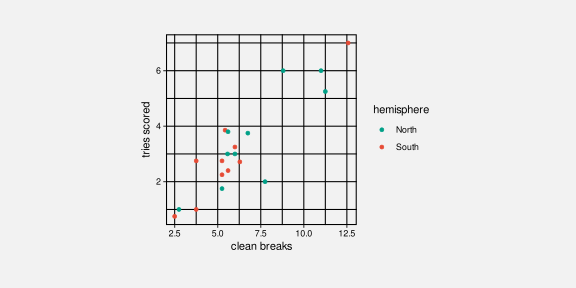
The use of colour in Figure 14.10 is another example of encoding (qualitative) non-data values as visual features. In this case, we are encoding the importance of different visual elements as visual features (Figure 14.12). We decode the differences in colour to a more important group of elements and a less important group of elements.

Figure 14.13 shows a similar application of importance. In this case, we are highlighting two data points (New Zealand and South Africa). The distinct colour and larger size of the two points encodes the importance of those points and draws attention to those points, with everything else as background context.
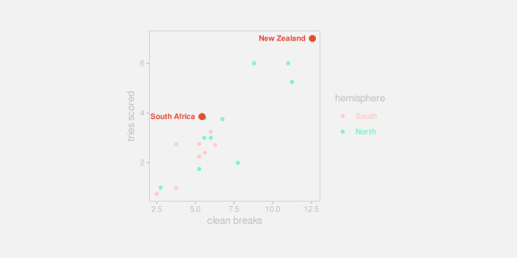
14.5 Dangers of encoding importance
When we encode importance, we are relying on basic properties of the visual system to draw attention to specific elements of a plot (Section 2.6). As we saw in Section 2.10, those basic properties of the visual system can also work against us. Our attention will be drawn to large and bright elements of a data visualisation automatically.
For example, in Figure 14.14, our eye is drawn to the tiger’s eye, which distracts us from the more important heights of the bars. There are clear overlaps here with the ideas of clutter and chart junk (Section 12.6).
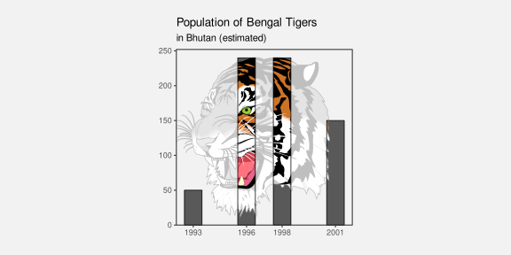
14.6 Summary
Just as we can encode data values to visual features, in order to communicate information about the data, we can encode non-data information to visual features, in order to communicate important aspects of the structure of a data visualisation.
The structure or organisation of a data visualisation, or the importance of specific elements, can be effectively encoded as the position or colour of different elements of the data visualisation.
Communicating structure and importance helps the viewer to navigate within the data visualusation, which makes it easier to decode information from the data symbols within a data visualisation.
Cabouat, Anne-Flore, Lorenzo Ciccione, Samuel Huron, Tobias Isenberg, and Petra Isenberg. 2025.“Bridging Educational Theories of Cognitive Load to Visualization Design and Evaluation .” In 2025 IEEE VIS Workshop on Visualization Education, Literacy, and Activities (EduVIS), 33–64. Los Alamitos, CA, USA: IEEE Computer Society. https://doi.org/10.1109/EduVIS69391.2025.00009.
Tufte, Edward R. 1983. The Visual Display of Quantitative Information. Cheshire, Connecticut: Graphics Press.
Williams, Robin. 2014. The Non-Designer’s Design Book. 4th ed. Berkeley, CA: Peachpit Press.
This data visualisation was based on figures from the Youth Justice Indicators Report from 2021.↩︎
We might describe the topic of this chapter as the overall design of a data visualisation. Much of what we discuss will have a basis in the properties of the visual system, but much will also echo the basic design principles espoused in Robin Willams’ CRAP design principles (Williams 2014).↩︎
Cabouat et al. (2025) report that “if a learner found a visualization more readable, they felt it required less mental effort to parse relevant information from it for learning.”↩︎
Alignment is also one of the CRAP design principles (Williams 2014).↩︎
A consistent encoding aligns with the CRAP design principle of repetition (Williams 2014).↩︎
This data visualisation is based on a plot from the Popular Information web site by Judd Legum. The data are from the Penn Wharton Budget Model.↩︎
This is precisely the mistake that was made when this data visualisation was discussed on The Majority Report (~6:00).↩︎
The idea of making a clear visual distinction between different elements of a data visualisation mirrors the CRAP design principle of contrast.↩︎
This also relates to Tukey’s data-ink ratio (Tufte 1983).↩︎